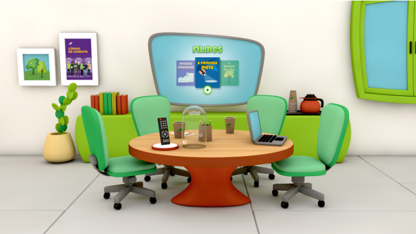
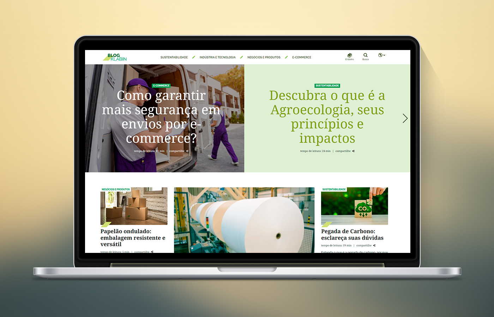

Olá! Sou a Vitória Benício, Gerente de Projetos, no Rio de Janeiro.
Aqui estão alguns dos meus projetos favoritos que mostram como, em parceria com um time integrado, transformamos ideias em experiências digitais que unem tecnologia, planejamento e estratégia.

O jogo foi desenvolvido com base no conceito do "escape 60", apresentando ambientes personalizados do universo Klabin, onde os usuários avançam respondendo perguntas e interagindo com elementos adicionais para reforçar o aprendizado de forma lúdica.
Para a campanha de 123 anos da Klabin, intitulada “O futuro tem as cores da nossa história”, a artista Marina Amaral colorizou fotos históricas da empresa, trazendo-as à vida. A parceria gerou diversas peças promocionais e um banner interativo no site.

Lançado em junho de 2023, o Blog Klabin foi criado para ampliar a presença digital da marca e alcançar novos públicos, reunindo conteúdos informativos e de valor. O projeto foi pensado para oferecer uma navegação fluída e interativa, com diversas funcionalidades.
Ao longo da minha trajetória, tive a oportunidade de trabalhar com empresas incríveis e construir conexões profissionais valiosas. Confira algumas delas:
Estou presente ao longo de todo ciclo de vida do projeto. Por isso, algumas etapas e processos fazem parte do meu dia a dia como gestora.
Elas se conectam continuamente para garantir a entrega de soluções digitais que geram valor para os negócios e fazem a diferença na experiência dos usuários.
Durante o processo de entender os objetivos do negócio e identificar oportunidades em um projeto, realizo pesquisas como benchmarking para avaliar as tendências de mercado ou sessões de discovery com as partes interessadas para coletar informações que serão usadas posteriormente no roadmap do produto e na definição de user stories.
O planejamento e a criação de cronogramas são fundamentais para o projeto. Durante todas as etapas, realizo alinhamentos semanais para gerenciar as expectativas das partes interessadas, garantindo que as equipes estejam em sintonia com o projeto, prazos e funções. Dessa forma, conseguimos resolver de maneira mais assertiva os problemas que podem surgir ao longo do projeto.
Em projetos com equipes integradas, participo ativamente da fase de Design UX e UI, acompanhando a criação e entrega de wireframes e mapas de arquitetura. Meu objetivo é garantir que o produto esteja alinhado com os objetivos do negócio, seja bem estruturado e ofereça uma excelente experiência de usuário. Além disso, também podemos rodar testes de usabilidade para validar a eficiência das ideias e conceitos.
Utilizando metodologias ágeis como Scrum ou Kanban, garanto a entrega dos requisitos do projeto através da criação de user stories e de um backlog priorizado. Reviso práticas de acessibilidade, SEO e recursos de análise de métricas, assegurando a conformidade com as normas de privacidade e segurança de dados (LGPD). Também realizo testes nas funcionalidades desenvolvidas, incluindo os módulos administrativos de conteúdo.
Como gerente de projeto, é possível criar dashboards para monitorar e acompanhar métricas, permitindo avaliar o desempenho e o impacto das soluções implementadas ao longo do projeto.
Alguns projetos incluem sessões de treinamento focadas na navegação pelas interfaces, criação e edição de conteúdo, e outros aspectos importantes do projeto. Forneço instruções detalhadas, documentação e suporte para que a equipe opere com autonomia e aproveite ao máximo as funcionalidades implementadas.